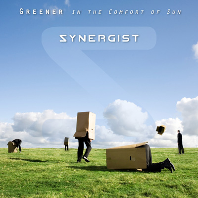

Greener (in the Comfort of Sun)
by Synergist - Lyrics by CutcH*

oh, when its all said and done, well
you know its greener in the comfort of the sun until
when in the comfort of green
well, you'll finally learn what it actually means to
inhale perception
and feel it separate
and in the instant your misguided fear is erased, replaced
its time to make my case
find a light in the darkest place
go slow
discover the afterglow
you know, to blindly believe
well it just shows your naivety
the need to feel the green
oh, if I told you the truth, well
you'd probably think that I'm a liar
think what you will
cause I can see through the seams
inside this pocket the world has provided for me
empowered
I've been breathing through the looking glass
so while the rest of you wait for the smoke to pass, i'll
inhale perception
and feel it separate
and in the instant your misguided fear is erased, replaced
its time to make my case
light up the darkness
go slow
discover the afterglow
you know, to blindly believe
well it just shows your naivety
the need to feel the green
your misconceptions are eating at me
tales of our fathers' misguided greed
your misconceptions are tales of misguided society
so please, you've got to go slow
discover the afterglow
when you blindly believe
you know shows your naivety
the need to feel the green*CutcH is Craig McCutcheon |